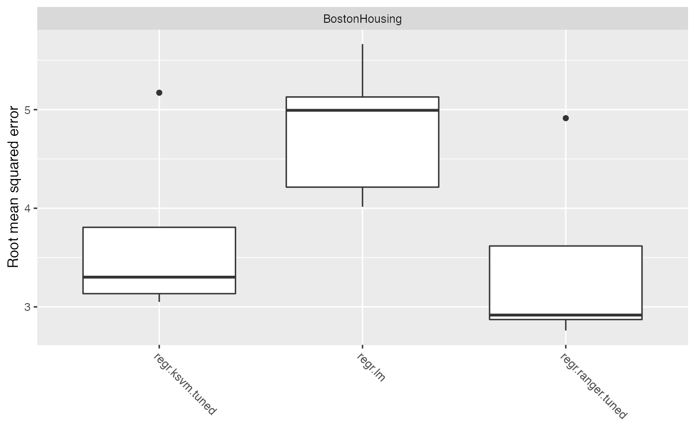

For the regression use case we use the well-known mlbench::BostonHousing() dataset. The road map is as follows:
- define the learning task (here),
- tune the model (here),
- conduct a benchmark experiment (here) and
- evaluate the performance of the model (here).
First, let’s have a look at the data.
data(BostonHousing, package = "mlbench")
summary(BostonHousing)
## crim zn indus chas nox
## Min. : 0.00632 Min. : 0.00 Min. : 0.46 0:471 Min. :0.3850
## 1st Qu.: 0.08205 1st Qu.: 0.00 1st Qu.: 5.19 1: 35 1st Qu.:0.4490
## Median : 0.25651 Median : 0.00 Median : 9.69 Median :0.5380
## Mean : 3.61352 Mean : 11.36 Mean :11.14 Mean :0.5547
## 3rd Qu.: 3.67708 3rd Qu.: 12.50 3rd Qu.:18.10 3rd Qu.:0.6240
## Max. :88.97620 Max. :100.00 Max. :27.74 Max. :0.8710
## rm age dis rad
## Min. :3.561 Min. : 2.90 Min. : 1.130 Min. : 1.000
## 1st Qu.:5.886 1st Qu.: 45.02 1st Qu.: 2.100 1st Qu.: 4.000
## Median :6.208 Median : 77.50 Median : 3.207 Median : 5.000
## Mean :6.285 Mean : 68.57 Mean : 3.795 Mean : 9.549
## 3rd Qu.:6.623 3rd Qu.: 94.08 3rd Qu.: 5.188 3rd Qu.:24.000
## Max. :8.780 Max. :100.00 Max. :12.127 Max. :24.000
## tax ptratio b lstat
## Min. :187.0 Min. :12.60 Min. : 0.32 Min. : 1.73
## 1st Qu.:279.0 1st Qu.:17.40 1st Qu.:375.38 1st Qu.: 6.95
## Median :330.0 Median :19.05 Median :391.44 Median :11.36
## Mean :408.2 Mean :18.46 Mean :356.67 Mean :12.65
## 3rd Qu.:666.0 3rd Qu.:20.20 3rd Qu.:396.23 3rd Qu.:16.95
## Max. :711.0 Max. :22.00 Max. :396.90 Max. :37.97
## medv
## Min. : 5.00
## 1st Qu.:17.02
## Median :21.20
## Mean :22.53
## 3rd Qu.:25.00
## Max. :50.00This data set concerns housing in the suburban area of Boston. The target variable, chosen for the regression task, is medv - the median value of owner-occupied homes in $1000’s. Description of the others 13 attributes can be found at mlbench::BostonHousing()).
Define a task
Now, let us continue with defining the regression task.
# Make a task
regr.task = makeRegrTask(data = BostonHousing, target = "medv")
regr.task
## Supervised task: BostonHousing
## Type: regr
## Target: medv
## Observations: 506
## Features:
## numerics factors ordered functionals
## 12 1 0 0
## Missings: FALSE
## Has weights: FALSE
## Has blocking: FALSE
## Has coordinates: FALSEIn order to get an overview of the features type, we can print out the regr.task. This shows that there are 12 numeric and one factor variables in the data set.
Tuning
By calling listLearners("regr") we can see which learners are available for the regression task.
With so many learners it is difficult to choose which one would be optimal for this specific task. As such we will choose a sample of these learners and compare their results. This analysis uses the classical linear regression model (regr.lm), SVM (kernlab::ksvm()) with a radial basis kernel (regr.ksvm) and random forest from the ranger (ranger::ranger()) package (regr.ranger). In order to get a quick overview of all learner-specific tunable parameters you can call getLearnerParamSet() or its alias ParamHelpers::getParamSet(), which will list learner’s hyperparameters and their properties.
Before setting up a benchmark experiment we can specify which hyperparameters are going to be tuned. The mlr package provides powerful tuning algorithms, such as iterated F-racing (irace::irace()), CMA Evolution Strategy (cmaes::cma_es()), model-based / Bayesian optimization (mlrMBO::mbo()) and generalized simulated annealing (GenSA::GenSA()). See Tuning and Advanced Tuning for more details.
For each learner one hyperparameter will be tuned, i.e. kernel parameter sigma for SVM model and the number of trees (num.trees) in the random forest model. We start with specifying a search space for each of these parameters. With makeTuneControlCMAES() we set the tuning method to be CMA Evolution Strategy (cmaes::cma_es()). Afterwards we take 5-fold cross validation as our resampling strategy and root mean squared error (rmse) as optimization criterion. Finally, we make tuning wrapper for each learner.
set.seed(1234)
# Define a search space for each learner'S parameter
ps_ksvm = makeParamSet(
makeNumericParam("sigma", lower = -12, upper = 12, trafo = function(x) 2^x)
)
ps_rf = makeParamSet(
makeIntegerParam("num.trees", lower = 1L, upper = 200L)
)
# Choose a resampling strategy
rdesc = makeResampleDesc("CV", iters = 5L)
# Choose a performance measure
meas = rmse
# Choose a tuning method
ctrl = makeTuneControlCMAES(budget = 100L)
# Make tuning wrappers
tuned.ksvm = makeTuneWrapper(learner = "regr.ksvm", resampling = rdesc, measures = meas,
par.set = ps_ksvm, control = ctrl, show.info = FALSE)
tuned.rf = makeTuneWrapper(learner = "regr.ranger", resampling = rdesc, measures = meas,
par.set = ps_rf, control = ctrl, show.info = FALSE)Benchmark Experiment
In order to conduct a benchmark experiment, it is necessary to choose an evaluation method. We will use the resampling strategy and the performance measure from the previous section and then pass the tuning wrappers as arguments into the benchmark() function.
# Four learners to be compared
lrns = list(makeLearner("regr.lm"), tuned.ksvm, tuned.rf)
# Conduct the benchmark experiment
bmr = benchmark(learners = lrns, tasks = regr.task, resamplings = rdesc, measures = rmse,
show.info = FALSE)Performance
Now we want to evaluate the results.
getBMRAggrPerformances(bmr)
## $BostonHousing
## $BostonHousing$regr.lm
## rmse.test.rmse
## 4.841535
##
## $BostonHousing$regr.ksvm.tuned
## rmse.test.rmse
## 3.775318
##
## $BostonHousing$regr.ranger.tuned
## rmse.test.rmse
## 3.510068A closer look at the boxplot reveals that RF outperforms the other learners for this specific task. Despite the tuning procedure performed before, the benchmark experiment for linear and lasso regression yields similar but poor results.
plotBMRBoxplots(bmr)